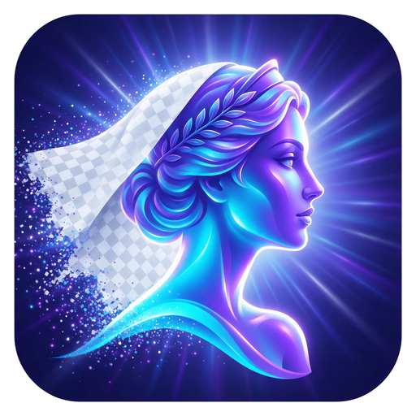
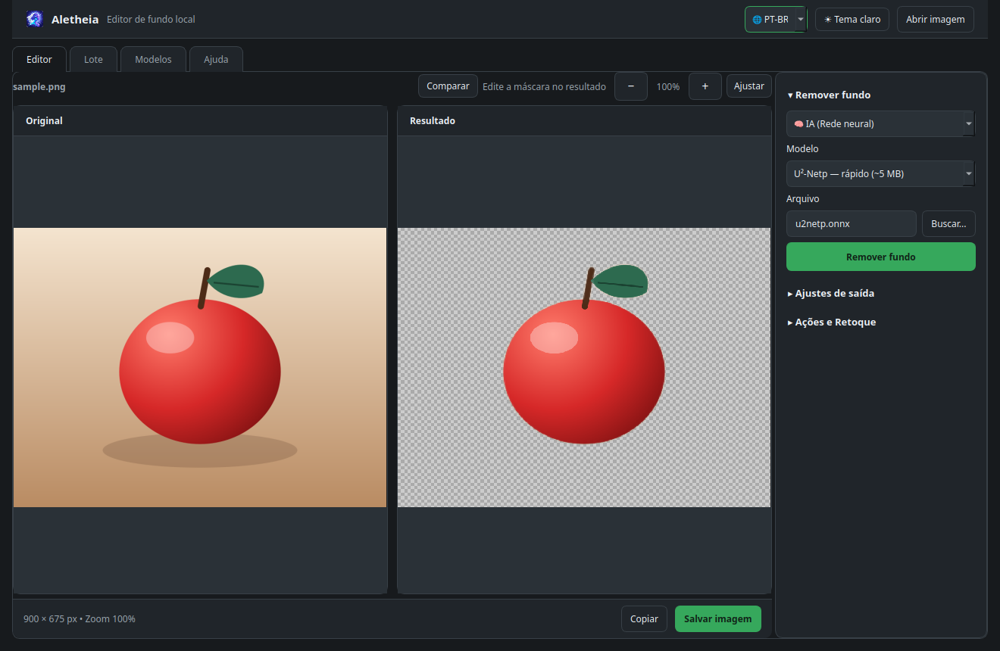
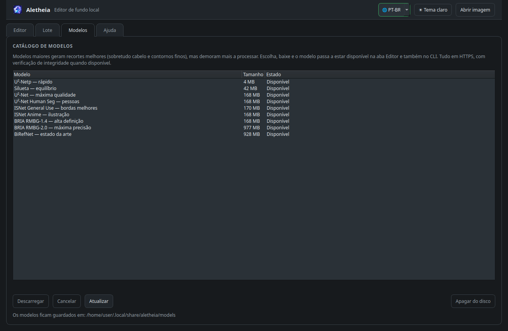
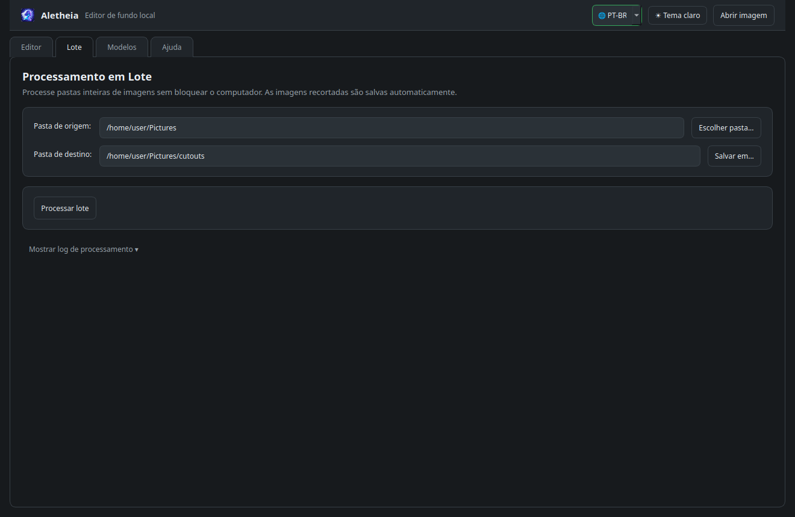
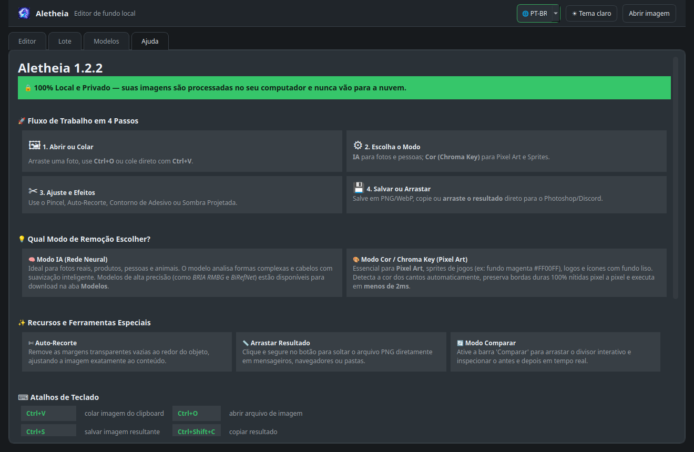

# batch a whole folder
aletheia_cli /path/to/input -o /path/to/output
# single image, specific model, webp output
aletheia_cli photo.png -o photo_rembg.webp -m model.onnx -f webp
# 4 images in parallel
aletheia_cli /path/to/input -o /path/to/output -j 4
# chroma key with despill + feather (pixel art / green screen)
aletheia_cli sprite.png --chroma-key '#00ff00' --despill 80 --feather 1
aletheia_cli --helpgit clone https://github.com/MarielCarlosFrias/Aletheia.git
cd Aletheia
sudo apt install -y build-essential cmake qt6-base-dev # Debian/Ubuntu
cmake -S . -B build -DCMAKE_BUILD_TYPE=Release -DBG_REMOVER_FETCH_ONNX_RUNTIME=ON
cmake --build build -j
./build/aletheia